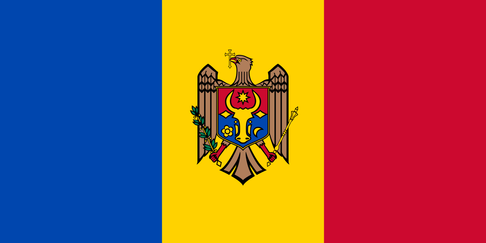
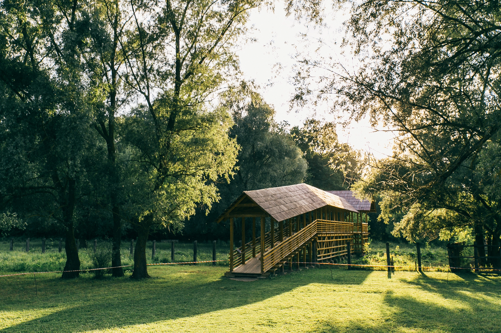

Республика Молдова — это удивительный край, способный поразить путешественников своими живописными природными ландшафтами и богатейшей многовековой историей. Настоящей жемчужиной страны по праву считается историко-археологический комплекс Старый Орхей, где среди скал сохранились древние пещерные монастыри. Не менее загадочным местом является природный заповедник «Пэдуря Домняскэ», ставший домом для могучих европейских зубров. Прямо у его границ раскинулся фантастический памятник природы «Сто курганов», чье происхождение до сих пор остается неразгаданной тайной для ученых. Любителям грандиозных панорам обязательно стоит посетить село Наславча, откуда открывается космический вид на остров в форме сердца посреди реки Днестр. На севере Молдовы завораживают дух массивные Толтры — древние известняковые рифы, которые когда-то были дном доисторического моря. Архитектурное наследие страны ярко представляют старинная Сорокская крепость на набережной Днестра и величественный замок Мими. Визитной карточкой края также являются знаменитые на весь мир Криковские подвалы, представляющие собой настоящий подземный город. Каждое из этих мест обладает своей неповторимой энергетикой и оставляет глубокий след в сердце каждого гостя. Путешествие по этим колоритным локациям позволяет заново влюбиться в живописную и гостеприимную молдавскую землю.
«Пэдуря Домняскэ» (в переводе «Государев лес» или «Королевский лес») — это крупнейший природный заповедник Республики Молдова, расположенный на северо-западе страны вдоль берега реки Прут (на территории Глодянского и Фалештского районов). Он был основан в 1993 году и занимает общую площадь 6032 гектара. Это уникальный биосферный комплекс, который называют «маленьким раем» за его древнюю экосистему и богатое биоразнообразие.
